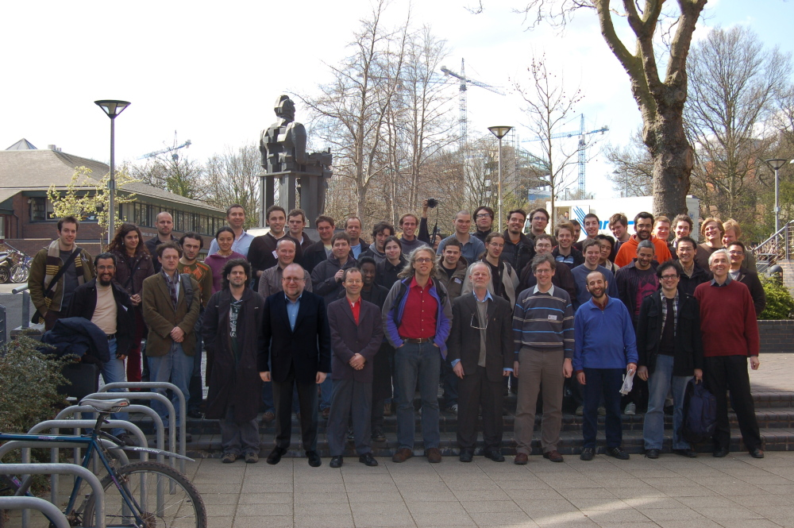

Myself (June 2017)
Not to be confused with
Find Wally
Looking for a conjecture
With Nancy Roy
With Antonia Badarau
With Antonia Badarau and Dragos Popa
Team "Achim"
With Dr Chuangjie Xu
With Dr Xiaodong Jia after his graduation
Welcoming 250 Computer Science teachers to the 10th Annual Computing at School conference (photo by Maria Ruan)
At the Midlands Graduate School 2018 in Nottingham

With Mingjie Cai, Xiaodong Jia, Qingguo Li, and Lingjuan Yao in Oxford
With Qingguo Li on Mount Cangyan, greeting the next generation of domain theorists
With colleagues Weng Kin Ho, Dongsheng Zhao, and Qingguo Li on Mount Cangyan
With Paul Levy and Birmingham PhD students Weiqi, Koko, Natasha, Rajiv, Yuning, and Steven

With colleague Rami Bahsoon and freshly graduated Louisa Golden
Tying himself into knots during a presentation at Schloss Dagstuhl
The Birmingham Theory Group at lunch, September 2015. From left: Achim Jung, Dan Razvan Ghica, Koko Muroya (visitor), Bram Geron, Paul Levy, Steve Vickers, Neel Krishnaswami, Cory Knapp, Chuangjie Xu, Weng Kin Ho (visiting alumnus).
With Dr Chuangjie Xu after the graduation ceremony, July 2015
With Yingjing Seffy Feng after the graduation ceremony, July 2015
At the first Workshop on Models of Computation with Order and Topology, Isfahan, April 2015
At the first Workshop on Models of Computation with Order and Topology, Isfahan, April 2015
After the December 2014 Graduation ceremony with Rebecca Devney, David Stinson, and Sam Farmer

After the May 2014 Graduation ceremony with Sam Kendell (middle) and Oliver Smithson
After Prof Mojgan Mahmoudi's seminar, 26 June 2014
Farewell for Dr Liang-Ting Chen, 24 January 2014
Maybe crazy but very happy, 20 July 2012
With honorary graduate Dame Wendy Hall and Head of College, Richard Williams, 10 July 2012
With newly graduated Dr Shuo Wang, 15 December 2011
Addressing the new graduates, 15 December 2011
Celebrating Jacob Vosmaer's PhD, Amsterdam, 14 December 2010
Jacob Vosmaer is awarded his PhD in Amsterdam, 14 December 2010
Asking Jacob Vosmaer a question at his PhD defense in Amsterdam, 14 December 2010
With Matthew Gwynne after his MRes viva, November 17, 2009 (picture by Markus Roggenbach)
With Dr Paola Maneggia and her two daughters, September 26, 2009
With Dr Mathias Kegelmann and his two daughters, September 26, 2009
With Dhaval Sejpal, June 20, 2008 (picture by Gary Zilong)
With Dito Pataraia in front of Svetitskhoveli Cathedral in Mtskheta, Georgia. June 2008 (picture by Nick Bezhanishvili)
Participants in the Midlands Graduate School. Birmingham, 17 April 2008

With Dr Mohamed El-Zawawy, after his viva voce, Dec 20, 2006 (picture by Martin Escardo)
In the office, August 22, 2005 (picture by Martin Escardo)
Computability in Europe, Amsterdam, June 2005
In conversation with Steve Vickers at the departmental Christmas party in December 2003 (picture by Dimitar Guelev)
At a seminar in Swansea, December 2003
With freshly graduated MSc student Virginia Ho, November 2002

My "doctoral grand child" Noemi Kegelmann with parents Paola Maneggia and Mathias Kegelmann (Oct 2002)
Symposium on Domain Theory, Chengdu, 22-26 Oct 2001
Graduation July 2000
In the office, Darmstadt, 16 September 1993 (photo by Philipp Sünderhauf)
In the Mathematics Department, Darmstadt, 16 September 1993 (photo by Philipp Sünderhauf)
Klaus Keimel, 16 September 1993 (photo by Philipp Sünderhauf)
Party in the Mathematics Department, Technische Hochschule Darmstadt, 1.4.1993 (and Jitka Sünderhauf preparing a non-bifinite cake)
Even longer ago...
(external link)